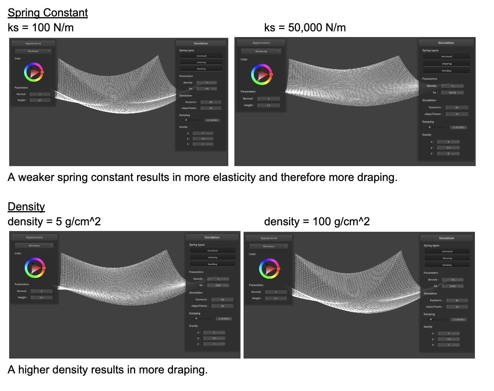
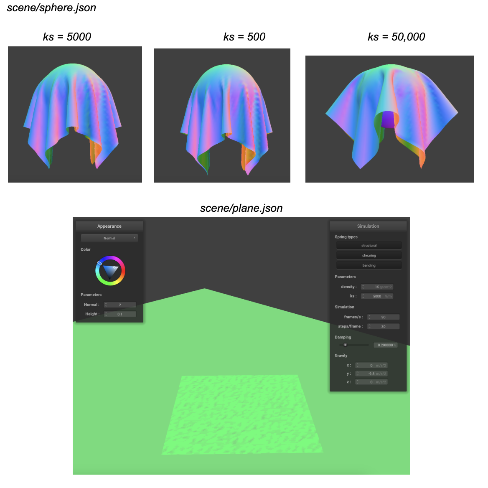

In this homework, we simulated cloth using a point masses and springs model. With the cloth efficiently spaced out with its point masses (which are then connected by the aforementioned springs), as time progresses, the cloth is allowed to be malleable and change as the magnitude and type of the forces upon it change. Verlet integration was used to adjust the cloth based on the given properties. Below, we document how we progressed through the code.
Changing the spring constant ‘ks’ makes the elasticity of the cloth change. A larger ks results in a smaller amount of elasticity. Conversely, a lesser ks means the cloth will stretch more. A smaller ks constant means that the point masses in our mesh are more stretched apart, leading to the results we see. For density, we get a nearly oppositional result from what we saw with ks. Density affects the forces on the point masses, which in turn cause the cloth to drape more when the density is higher. The force of gravity changes based on the density that we provide. You can imagine, then, that when we have a smaller force from gravity with a very small density, that our cloth is highly vulnerable to smaller movements/motion in the cloth. For damping, we see that the movement of the cloth itself is “dampened” when the damping constant is higher. That is, in the simulation, a higher damping constant results in less swinging and overall motion from the cloth. Therefore, we can also infer that with a smaller damping constant, the cloth has extended movement, almost like the air is restricting it. So overall, the damping constant seems to tighten everything up and resist all movement when it’s high, a high density yields a greater force of gravity, so more profoundly demonstrated draping of the cloth over objects, and a higher ks means the cloth has less stretchiness.
We can see from the screenshots that the above explanation is accurate. We mentioned that a smaller ks makes the cloth stretchier/more elastic, and a larger ks would have the opposite effect. The pictures support this conclusion. With a larger 50000 ks, the cloth’s starting shape is held more rigidly. With the smaller 500 ks, the cloth’s shape has more drapey-ness and is more receptive to changes in shape.
Shaders are rendering programs that we leverage to manipulate vertex and fragment values to generate our desired graphics effects. By using shader programs, we can run these effects in parallel on GPUs. Shader program pipelines are implemented by linking vertex shaders and fragment shaders. Vertex shaders manipulate vertices in our graphics program, changing attributes such as vertex position and normal vectors. These changes are processed and passed into our fragment shaders downstream. Our fragment shaders are then used to implement wider-scale graphic effects on our post-rasterization fragments. These shaders take in the geometric fragment input from our vertex shaders and output our desired color.
The Blinn-Phong shading model evaluates the light at a given point as the sum of ambient light (light that is always present), diffuse reflection (simulates the visual light effect of rough/matte surfaces), and specular reflection (simulates the shiny/mirror reflection effect). The light intensity is also calculated by using the angle between the light source, the surface normal, and the viewing direction.
Both bump mapping and displacement mapping provide an extra depth to our renders by simulating granular patterns on our objects. This is done by making use of varying local normals in our meshes. With displacement mapping, we get a more geometric complex manipulation that changes our vertices. In some use cases, this can provide quite realistic imaging. Our bump mapping expresses the desired coarseness and bumps on our surfaces, while maintaining the vertex geometry. In my opinion, while the displacement mapping can look a bit weird in the plain sphere, it provides cool extra details on the draped cloth.